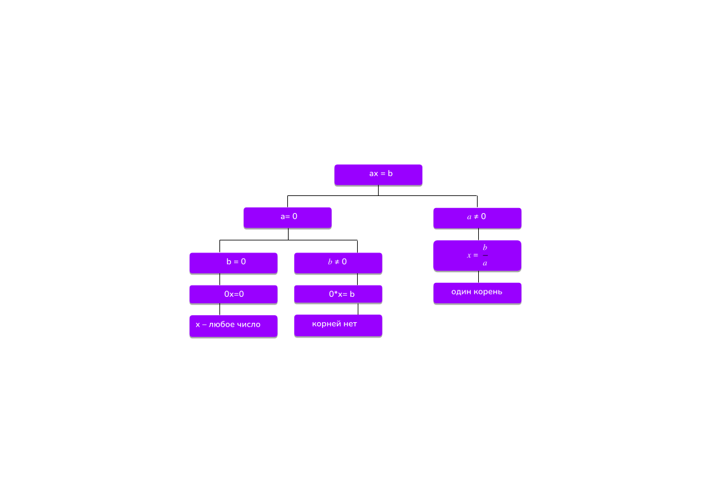

Линейным уравнением называется уравнение вида 𝑎𝑥 = 𝑏, где 𝑎, 𝑏 - некоторые действительные числа, x –
переменная.
В зависимости от коэффициента а, зависит и решение этого уравнения.
Если а = 0, возникает два вопроса значениях b:
Если а = 0, b = 0, то уравнение принимает вид 0* х= b,
значит уравнение имеет бесконечно много решений,
решением
является любое действительно число.
Если а = 0, 𝑏 ≠ 0, то уравнение принимает вид 0 * х= b,
значит уравнение не имеет корней, т.к. нет такого
числа,
которое при умножении на нуль даст результат, отличный от нуля.
При а ≠ 0 мы можем обе части уравнения разделить на а, имеем единственный корень, равный 𝑥 = 𝑏
Ответ: при 𝑎 ≠ 0 единственное решение 𝑥 = 𝑏;
при а = 0, b = 0, где х – любое число; при а = 0, 𝑏 ≠ 0 нет решений;
при 𝑎 ≠ 0 единственное решение 𝑥 = 𝑏.
Наши рассуждения можно наглядно изобразить в виде схемы:

В процессе решения этого уравнения мы выделили значения параметра а = 0,
при котором происходит
качественное
изменение уравнения, такое значение параметра мы будем называть «контрольным» или «особым».